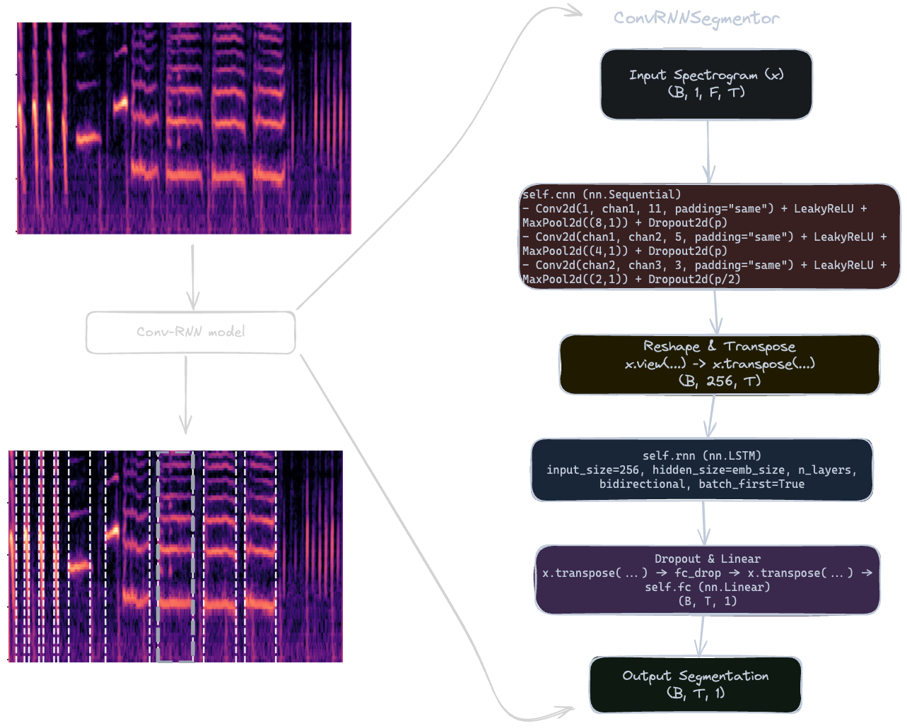
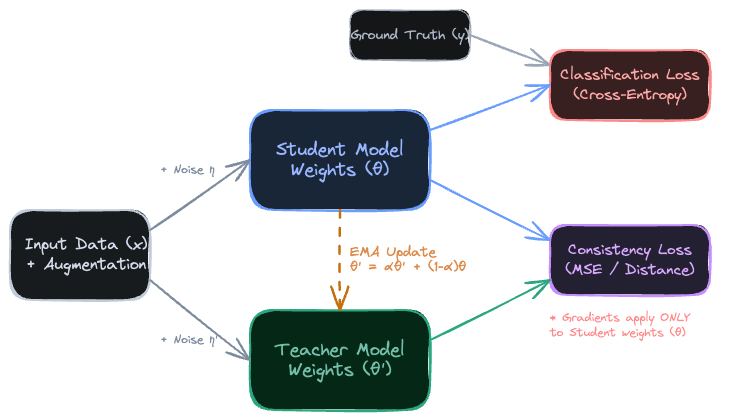
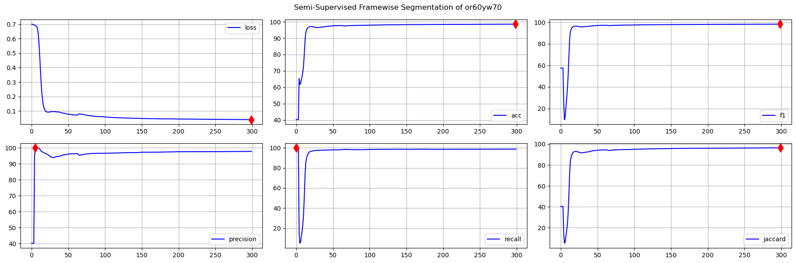

Semi-supervised vs supervised vs thresholding for birdsong segmentation
This project is a small part of a bigger project. It is just focused on segmentation of bird syllable using semi-supervised technique
How it works
Notebook workflow:
- Implement threshold-based baselines (A/B/C variants) from signal envelope heuristics.
- Train a supervised ConvRNNSegmentor on few-shot labeled data.
- Train a semi-supervised Mean Teacher variant with confidence filtering on pseudo-labels.
- Evaluate all methods with accuracy, F1, precision, recall, and Jaccard.
Notebook file in this repo: assets/neural-segmentation/NeuralSegmentation.ipynb
Comparison overview of the segmentator approach used in this project.

Methods compared
Thresholding baselines
- Variant A, B, C implemented with different thresholding and post-processing behavior.
- Used as non-neural baselines per bird/species split.
Neural models
- Supervised ConvRNNSegmentor trained directly on labeled segments.
- Semi-supervised Mean Teacher with ramp-up consistency and confidence-gated pseudo labels.
Mean Teacher algorithm overview
Figure provided by you explaining the Mean Teacher training setup used in this experiment.

Training dynamics figure (semi-supervised)
Training-loss figure from your experiment artifact.

Bengalese Finch results (per-bird F1)
| Bird | Threshold C F1 | Threshold B F1 | Threshold A F1 | Supervised F1 | Semi-supervised F1 |
|---|---|---|---|---|---|
| bl26lb16 | 69.02 | 91.67 | 97.73 | 96.96 | 97.86 |
| gr41rd51 | 85.40 | 95.91 | 98.25 | 97.81 | 98.25 |
| gy6or6 | 71.68 | 91.74 | 99.17 | 97.87 | 98.36 |
| or60yw70 | 81.67 | 96.54 | 99.04 | 97.59 | 98.49 |
Species-level aggregate (printed): Supervised F1 = 98.2890, Semi-supervised F1 = 98.8331.
Canary results (per-bird F1)
| Bird | Threshold C F1 | Threshold B F1 | Supervised F1 | Semi-supervised F1 |
|---|---|---|---|---|
| llb11 | 68.07 | 85.80 | 97.41 | 97.60 |
| llb3 | 70.36 | 91.56 | 97.00 | 97.11 |
| llb16 | 77.04 | 89.62 | 97.37 | 97.57 |
Canary pattern in this run: neural methods substantially outperform thresholding; semi-supervised is slightly higher than supervised on all listed birds.
Interpretation
- Thresholding can reach high precision but tends to lose recall in harder cases, reducing F1.
- Supervised neural segmentation provides strong and stable gains over thresholding.
- Semi-supervised Mean Teacher adds a consistent incremental improvement over supervised in this notebook run.
These statements are tied to the printed notebook outputs from this artifact and should be treated as run-specific until reproduced across independent splits.
Reproduce this run
- Open the notebook artifact and verify dependency versions from the Intro cell.
- Run thresholding baselines first to establish non-neural reference points.
- Run supervised and semi-supervised sections for Bengalese and Canaries.
- Collect per-bird metrics from printed outputs and exported CSV logs.